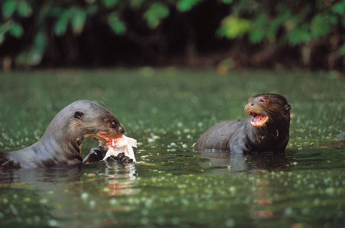

HABITAT
La nutria es un mamífero semiacuático que habita en ríos, lagos y zonas costeras. Se encuentra en diversas partes del mundo, incluyendo América del Norte, América del Sur, Europa y Asia.

UBICACIÓN GEOGRAFICA
En América del Norte, la nutria se encuentra principalmente en los ríos y lagos de Canadá y los Estados Unidos, desde Alaska hasta Florida. En América del Sur, habita en los ríos y pantanos de la selva amazónica y otras áreas del continente. En Europa, se encuentra en los ríos y lagos de Escandinavia, Rusia y otros países. Y en Asia, se encuentra en los ríos y costas de países como China, Japón, Corea y Rusia.En general, las nutrias prefieren hábitats de agua dulce, como ríos, lagos y pantanos. También pueden habitar en zonas costeras, como estuarios y manglares, y en algunos casos pueden encontrarse en aguas salobres. La presencia de la nutria en un área suele ser un buen indicador de la calidad del agua y la salud del ecosistema acuático en general.
HÁBITOS ALIMENTICIOS
Las nutrias son carnívoras y se alimentan principalmente de peces, crustáceos, moluscos y otros invertebrados acuáticos. También pueden consumir aves, pequeños mamíferos y reptiles, dependiendo de su disponibilidad en su hábitat. Las nutrias son excelentes nadadoras y buceadoras, y pueden permanecer bajo el agua por varios minutos para atrapar su presa.
HÁBITOS REPRODUCTIVOS
Las nutrias son animales solitarios y territoriales, aunque pueden formar parejas durante la época de apareamiento. La época de apareamiento varía según la especie y la ubicación geográfica, pero suele ocurrir durante el invierno o la primavera. Después del apareamiento, la hembra gesta a sus crías durante un periodo de 60 a 70 días. Las crías nacen ciegas y sin pelo, y son cuidadas por la madre durante varios meses hasta que aprenden a nadar y a buscar alimento por sí solas.
ESTADO DE CONSERVACIÓN
La nutria ha sido objeto de caza por su piel y por considerarse una amenaza para la pesca comercial en algunos países. Además, la pérdida de hábitat y la contaminación del agua también han afectado a algunas poblaciones de nutrias. Según la Unión Internacional para la Conservación de la Naturaleza (UICN), varias especies de nutrias están en peligro de extinción o en estado vulnerable. Por lo tanto, es importante tomar medidas para proteger y conservar las poblaciones de nutrias en todo el mundo.
He aqui algunos paises donde la nutria esta actualmente extinta:
| País | Año de extinción | Razón |
|---|---|---|
| Países Bajos | 1988 | La caza y la contaminación del agua |
| Luxemburgo | 1980 | La contaminación del agua y la pérdida de hábitat |
| Dinamarca | 1980 | La caza y la contaminación del agua |
| Suiza | 1989 | La caza y la degradación del hábitat |